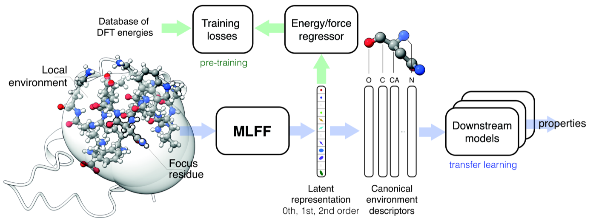
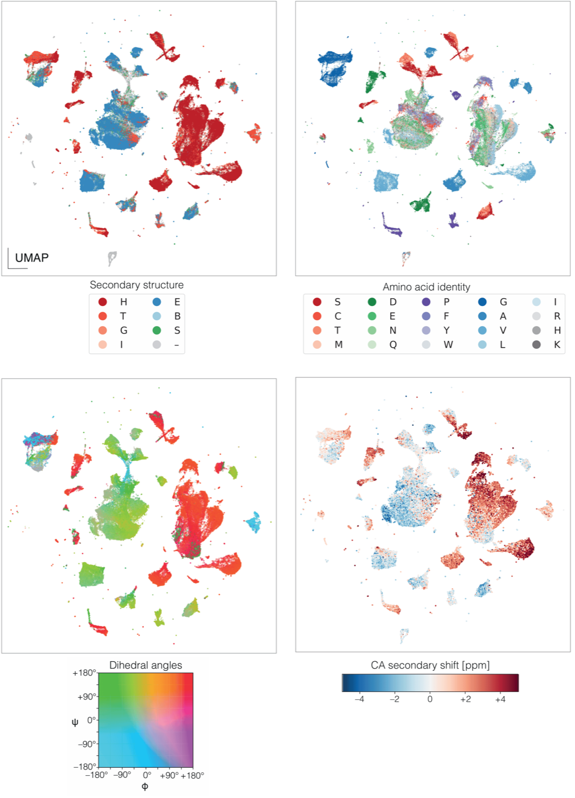
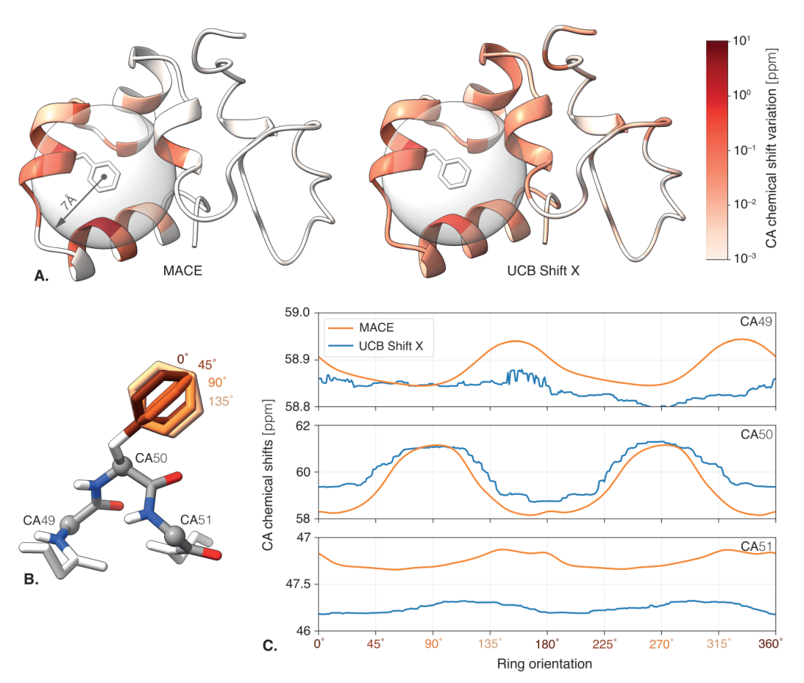

Representing local protein environments with machine learning force fields
* Equal contribution.
- Problem
- Learn a reusable representation of the local chemical environment of a protein residue.
- Representation
- Frozen per-atom embeddings from pretrained force fields (MACE, Egret, OrbNet, AIMNet).
- Method
- Crop a 5 Å environment, embed it, then use unsupervised analysis, small GNNs, or kernel density estimates.
- Evaluated on
- About 165K environments, split by sequence cluster (823 train and 225 test proteins).
- Main caveat
- Inputs are AlphaFold2-predicted structures, and the main pKa benchmark uses simulated labels.
- My contribution
- I analyzed the embedding geometry, built zero-shot predictors from it, and compared how well different layers transfer.
Demos marked Illustration are small simulations of the idea and do not run our models. Results from the work itself are in the figures marked From our paper and in the charts and tables.
One project, two venues
- 2025 GenBio workshop @ ICML 2025
- 2026 ICLR 2026: the full conference paper (OpenReview).
1. The problem: describing an atom's neighborhood
What an amino acid does depends strongly on what surrounds it. Its neighbors shape how acidic it is, how it binds a drug, and what signal it produces in an NMR experiment. To apply machine learning to these questions, we need a good numerical representation of a local protein environment.
That is hard because environments are extremely varied. Hand-crafted descriptors such as dihedral angles or hydrogen-bond terms capture only part of the picture. Sequence-based language models are powerful, but they are not trained directly on the physics of atomic interactions.
2. The idea: reuse a model that already learned the physics
An MLFF takes atom positions and element types and predicts energy, trained on large databases of quantum-mechanical (DFT) calculations. To do this well, its hidden layers must encode bond geometry, torsions and electronic interactions around each atom.
Because the features are defined per atom, they can transfer to unseen proteins: the atomic building blocks stay the same even when sequences and folds change. We benchmarked three families with different designs: MACE (with the related Egret), OrbNet and AIMNet.
3. Building a canonical environment descriptor

- Crop. Take a focus residue and every residue with an atom within 5 Å of it. An ablation over 4, 5 and 6 Å favored 5 Å (MACE has a 6 Å cutoff).
- Embed. Run the pretrained MLFF on this fragment and read per-atom features from its hidden layers: the final message-passing layer for most models, and both layers for MACE. Message passing means each feature already reflects the surrounding atoms.
- Canonicalize. Keep only features of a fixed set of atoms in the focus residue, so environments of different sizes can be compared directly.
The dataset contains about 165,000 local environments from 1,048 curated NMR database entries. Proteins are clustered at 50% sequence identity before the train and test split, which limits homology leakage. Structures are AlphaFold2 predictions with added hydrogens and force-field relaxation.
4. What the embeddings know, with no task-specific training
Zero-shot analysis. We first projected MACE features to 2D with UMAP. Neither the force field nor UMAP received any of these labels, yet the space organizes by secondary structure, amino acid identity, backbone angles and chemical shift.

Transfer learning. Small networks trained on the frozen embeddings confirm this quantitatively. For secondary structure, force-field features are competitive with the strongest protein-specific baseline:
| Embedding | Weighted F1, secondary structure (%) |
|---|---|
| LocoHD (hand-crafted) | 76.3 |
| ESM3 (sequence) | 88.2 |
| ISM | 92.5 |
| ESMFold | 93.3 |
| ESM3 (structure) | 95.4 |
| AIMNet | 94.7 |
| MACE | 95.7 |
From our paper. The top embeddings are effectively tied: the gap between MACE and ESM3 (structure) is small, and Egret's per-class F1 scores are within 0.2 points of MACE. Amino acid identity is also predicted at 96–99% F1, but this is likely an easy task because the features come from the residue's own atoms.
5. Transfer learning: predicting pKa
pKa measures how readily a chemical group gives up a proton. Inside a protein it shifts with the local electrostatics and solvent exposure, so it is a strong test of whether a representation captures local chemistry. We trained small graph networks on frozen features to predict pKa values calculated with a Poisson–Boltzmann solver.
| Residue | PropKa | pKa-ANI | ESM (Struc) | ESMFold | MACE | AIMNet |
|---|---|---|---|---|---|---|
| Glutamic acid | 0.551 | 0.445 | 0.360 | 0.351 | 0.306 | 0.265 |
| Aspartic acid | 0.469 | 0.473 | 0.388 | 0.419 | 0.280 | 0.267 |
| Lysine | 0.393 | 0.401 | 0.295 | 0.278 | 0.320 | 0.270 |
| Histidine | 0.561 | 0.426 | 0.408 | 0.383 | 0.424 | 0.380 |
From our paper. Mean absolute error against PypKa-computed values; lower is better. PropKa and pKa-ANI were trained on experimental pKa values, so they are not optimized for this computational reference.
AIMNet features give the lowest error on all four residue types. MACE-family features (MACE and Egret) lead or tie on the other benchmark tasks. The table shows selected columns.
Against experimental pKa. The labels above are simulated, so we also tested a MACE model, still trained on simulated labels, on the experimental PKAD-R dataset. This setting favors pKa-ANI, which was developed on a version of that dataset.
| Residue | pKa-ANI | Ours (MACE) |
|---|---|---|
| Glutamic acid | 0.696 | 0.695 |
| Aspartic acid | 0.978 | 0.831 |
| Lysine | 0.648 | 0.360 |
| Histidine | 0.899 | 0.925 |
From our paper. Mean absolute error against experimental values; lower is better. Glutamic acid is effectively a tie, and histidine has few training examples.
6. A likelihood over protein environments
If the embedding space is meaningful, distance in it should mean something. We define how typical an environment is using kernel density estimation over a reference set:
p(𝒳a) = (1 / |Eref|) Σ exp(−‖fθ(𝒳a) − fθ(𝒳′)‖² / 2σ²)
This score is sensitive to subtle changes: structures relaxed with a force field consistently receive higher likelihoods than the same structures before relaxation. Restricting the reference set gives conditional likelihoods, such as "how helix-like is this environment?", which separate secondary structures clearly with no trained prediction head.
Try it: how typical is this environment? Illustration
A 2-D cartoon of the embedding space, with reference environments from three classes. Drag the red marker to see its likelihood under the same kernel formula. The bandwidth σ controls how far each reference point reaches.
7. Case study: chemical shifts you can trust
NMR chemical shifts are extremely sensitive to the local environment, which makes them a natural application. We trained graph networks on frozen MLFF features to predict shifts for backbone atoms (N, Cα, C, H, Hα) and side-chain carbons. On a test set of 203 records with experimental shifts, the MACE-based predictor outperformed the state-of-the-art UCBShift2-X on every atom type except Hα.
| Atom | UCBShift2-X | Ours (MACE) | Improvement |
|---|---|---|---|
| H | 0.324 | 0.300 | 7% |
| Hα | 0.165 | 0.180 | −9% |
| N | 1.891 | 1.642 | 13% |
| Cα | 0.653 | 0.584 | 11% |
| Cβ | 0.758 | 0.716 | 6% |
| C | 0.827 | 0.744 | 10% |
| Cγ | 0.595 | 0.567 | 5% |
| Cδ | 0.615 | 0.456 | 26% |
| Cε | 0.519 | 0.447 | 14% |
From our paper. Mean absolute error in ppm against experimental RefDB shifts; lower is better. Selected atoms.
Does it follow the physics? An aromatic ring in a magnetic field carries a current that shifts nearby nuclei. A phenylalanine ring is symmetric, so rotating it by 180° must give the same result, and the effect should fade with distance. We rotated a ring synthetically and tracked predictions. Our model showed the expected 180° periodicity and smooth decay, becoming negligible past about 7 Å. UCBShift2-X extended its influence beyond 20 Å and did not reproduce that smooth periodic behavior.

Knowing when not to trust it. The likelihood from section 6 doubles as a confidence score: environments with lower likelihood have larger shift errors. To our knowledge, this is the first such confidence score for chemical shift prediction.
8. Looking inside the representation
Benchmarks show that the embeddings are useful, but not what they encode. We probed that directly:
- Geometry mirrors physics. As a phenylalanine ring rotates, the top two principal components of nearby Cα embeddings trace a smooth one-dimensional curve with almost perfect 180° periodicity. The structure weakens with distance and disappears for a residue the ring does not influence.
- Continuous motion stays continuous. Along a simulated helix-to-strand unfolding trajectory, PCA reveals latent directions that follow the structural change.
- Which layer? For MACE, concatenating both hidden layers worked best on most atom types. For the 15-layer OrbNet model, layer 10 often beat the final layer, so the last layer is not automatically the best representation.
- Can embeddings be inverted? Optimizing coordinates to match a target embedding, or guiding AlphaFold3 with it, partly recovers the underlying conformation. This suggests that the features retain much of the local geometry.
9. Limitations and what comes next
- Predicted input structures. Environments come from relaxed AlphaFold2 models, so errors in those models propagate to the features and predictions.
- Frozen features. We did not fine-tune the force fields, which may yield further gains.
- Hα shifts still slightly lag behind UCBShift.
- Long-range effects. MLFFs still struggle with long-range interactions in large biomolecules, and our descriptors are local by design.
- Next: because the predictor is fully differentiable, it could guide AlphaFold-style models directly with measured chemical shifts, the problem explored in Seek and You Shall Fold.
Takeaways
- Models trained on physics are good representation learners. Features learned from small-molecule energies transfer to proteins.
- A structured embedding space gives more than accuracy: similarity, likelihoods and uncertainty come almost for free.
- Test against known physics. Symmetry and decay checks can reveal what benchmark error cannot.
Glossary
Show the glossary
- MLFF: a neural network trained to predict the energies and forces of atoms.
- DFT: a quantum-mechanical method for computing molecular energies.
- Local environment: a residue and the atoms immediately around it.
- pKa: the pH at which a chemical group is half protonated.
- Chemical shift: a nucleus's NMR frequency relative to a reference, sensitive to its surroundings.
- UMAP: a method for projecting high-dimensional data to 2D.
- KDE: kernel density estimation, which estimates a distribution by placing a kernel on each data point.
Related work on experimental protein data: Experiment-guided AlphaFold and Seek and You Shall Fold.
Code and citation
Code, trained models and data-processing scripts: github.com/mb012/MLFF_representation.
BibTeX
@inproceedings{bojan2026representing,
title = {Representing local protein environments with machine learning force fields},
author = {Bojan, Meital and Vedula, Sanketh and Maddipatla, Advaith and Sellam, Nadav and
Rzayev, Anar and Napoli, Federico and Schanda, Paul and Bronstein, Alex},
booktitle = {International Conference on Learning Representations},
year = {2026}
}